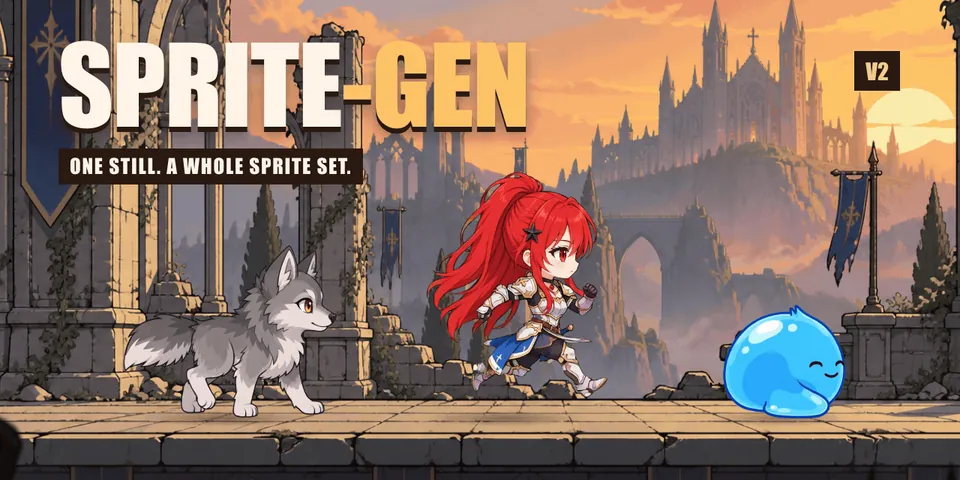
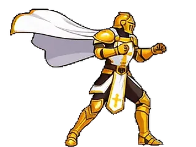

sprite-gen 是 aldegad 开源的 Codex/Claude Skill 与 Python CLI：给它一张基准静图，可以走出两条主路径——（A）按状态逐行生成、抠色键成真 alpha、拼成带 manifest.json.frame_layout 的运行时图集；或（B）交给视频模型做出片，再切成无缝透明动作循环。生成搞不定的最后一截，可用可选的策展网页比较、剔除、微调并预览循环后再烘焙。
LICENSE / pyproject.toml 均为 Apache-2.0（2026-11-06 核）。按本站规则做项目导读，并附录官方 README.zh-Hans.md（非本站另译）与许可证原文。示例图为仓库自带演示 GIF 的静帧（圣骑士/史莱姆等虚构角色，非真人照片），转 webp <150KB。README 中的 YouTube 展示片不下载、不转载，仅保留链接。
docs/assets/hero-v2-party.gif 的首帧（Apache-2.0，本站转 webp）。完整动画见原仓库；外链视频见 README 中的 YouTube。它是什么
- 问题：直接向图像模型要「精灵表」，常见结果是脸每帧漂移、背景抠不净、姿势叠在一起、引擎读不了的 PNG。
- 形态：可安装的 Agent Skill +
sprite-genCLI（CPython ≥3.11；CI 写明跑 3.14；依赖 Pillow、NumPy）。 - 交付物：真 alpha 图集
sprite-sheet-alpha.png、带绝对帧矩形/fps/循环标记的manifest.json.frame_layout、待机「Breathe」循环、像素网格对齐（Backbone Lattice）、视频来的透明 GIF/WebP、确定性recolor、Aseprite/Phaser/Flame 导出、背景平铺/投影阴影/运动检查，以及可选场景合成。 - 凭证：图像/视频调用走用户自己的订阅或 API Key（codex / grok / openai / claude 等）；仓库不附带密钥。按调用计费的路径会在 stderr 预先提示。
- 版本：pyproject 记
3.15.0，并要求与 SKILL.md 的 version 同步。

上图取自仓库 docs/assets/attack-*.gif 首帧（Apache-2.0）。
两条流水线与工具组
- A · 图集行：
prepare → gen/gen-set → extract → compose-atlas（可选curation）。 - B · 视频→循环：
video-canvas → video → video-frames → video-loop（需 ffmpeg、img2webp，以及 grok 登录或XAI_API_KEY）。 - C–E / S：抠图与切表、换色与引擎导出、平铺/阴影/运动检查、可选
scene-render。
侧向精灵的朝向（--facing）默认检测只记录、可能误判；镜像或重生修正需显式开启。细节见 SKILL.md / docs。
快速上手
python3 -m venv .venv && source .venv/bin/activate
pip install -e .
sprite-gen --help
sprite-gen prepare --out-dir <run> --character-id <id> --base-image base.png
sprite-gen gen-set --run-dir <run> --provider codex
sprite-gen extract --run-dir <run>
sprite-gen compose-atlas --run-dir <run>
Skill 安装（README）：
python3 ~/.codex/skills/.system/skill-installer/scripts/install-skill-from-github.py \
--repo aldegad/sprite-gen --path . --name sprite-gen
作者另推广 Steam 愿望单游戏 Dungeon Sookuma，并提到可用 GitHub Sponsors 补贴模型 API 费用——属项目周边，非本工具功能本身。
核实与注记
- ✅ Apache-2.0（LICENSE 与 pyproject；2026-11-06 核 raw）。
- ✅ 官方多语言 README（含简体中文）可公开读取。
- ⚠️ 未实测：本站未安装依赖、未跑 gen/video 管线，也未连接任何图像/视频 API。
- ⚠️ 演示动图说明中的「Grok Imagine / HyperFrames」等为作者自述制作链路；本站未复现。
- ⚠️ 朝向检测「即使高置信也可能错」为 README 原话；侧向结果需人工复核。
- 灵感致谢：组件行工作流受 Apache-2.0 的
hatch-petskill 启发（README Attribution）。
相关阅读（本站）：把 AI 像素画修成游戏精灵图；pixelfx 代码像素特效；GIF 表情包工作室。
附录一：官方简体中文 README
展开 / 收起 README.zh-Hans.md
来源：raw …/README.zh-Hans.md · 核 2026-11-06。下列为仓库官方简体中文；演示动图改为说明，YouTube 不嵌入。
English · 한국어 · 日本語 · 简体中文 · Español · Français
〔原 README 演示动图/视频封面：本站仅在导读中收录至多 3 张静帧 webp，完整动图见原仓库〕
〔原 README 演示动图/视频封面：本站仅在导读中收录至多 3 张静帧 webp，完整动图见原仓库〕
向图像模型要一张"精灵表"，结果你心里有数：角色的脸每帧都在变，背景抠不干净，姿势互相重叠又偏离网格，输出的 PNG 你的游戏引擎根本用不了。演示很可爱，素材没法用。
sprite-gen 是一个 Codex/Claude 技能，同时也是一个 Python CLI，专门填补这道鸿沟。给它一张基准图 —— 它会逐行驱动生成、锁定角色身份、把色键背景剥离为真正的 alpha、将每个姿势提取为干净的透明帧，并烘焙出带有机器可读 manifest.json.frame_layout 的运行时图集。或者把同一张静态图交给视频模型，为每个运动状态取回无缝的透明循环。至于生成永远搞不定的最后 10%，策展网页视图让你在烘焙前比较、剔除、微调，并实时观看循环效果。
从一个请求开始
你可以要精灵图，也可以要一张图像。代理会检查访问权限，只询问缺失的提供方/运动选项，运行既有流水线，然后交付文件。策展视图是可选的。保存一次你的选择，即可复用各自独立的精灵图与图像默认值；一次性请求不会覆盖它们。用户工作流与默认值。
流水线、独立工具与场景
两条精灵图流水线是有序的生成流程。工具组包含彼此独立的命令；场景创建是一个消费成品素材的可选工作流。sprite-gen --help 会打印这张地图，并按拥有各命令的代码域进行分组。
flowchart LR
subgraph A["A · 图集行"]
direction LR
a1[prepare] --> a2["gen · gen-set"] --> a3[extract] --> a5[compose-atlas]
a5 -.-> a4["curation（可选）"]
a4 --> a5
end
subgraph B["B · 视频 → 循环"]
direction LR
b1[video-canvas] --> b2[video] --> b3[video-frames] --> b4[video-loop]
end
subgraph C["C · 实用工具"]
direction LR
c1[cutout] ~~~ c2[slice-sheet] ~~~ c3[unpack-atlas]
end
subgraph D["D · 后期处理"]
direction LR
d1[recolor] ~~~ d2[export-*]
end
subgraph E["E · 素材工具（独立）"]
e1[background-tile] ~~~ e2[shadow] ~~~ e3[inspect-motion]
end
subgraph S["S · 场景（可选）"]
s1["现有素材 + scene.json"] --> s2[scene-render]
s1 --> s3[scene-inspect]
end| 流水线 / 工具组 / 工作流 | 输入什么 → 输出什么 | 文档 |
|---|---|---|
| A · 图集行 | 一张静态图 + 一组状态列表 → sprite-sheet-alpha.png + manifest.json.frame_layout，并在待机姿势上烘焙 Breathe | run-contract · breathing |
| B · 视频 → 循环 | 一张静态图 → 每个状态一份无缝透明 GIF / WebP / 条带，由 Grok Imagine 驱动动画并按其真实周期裁切 | video-pipeline · video |
| C · 实用工具 | 一张导入图像或网格表 → 干净的透明切片；一份成品图集 → 可供策展的运行目录 | sheet-slicing · curation |
| D · 后期处理 | 一份成品表 → 确定性配色方案、Aseprite / Phaser / Flame 导出 | recolor · engine-export |
| E · 素材工具 | 独立的 PNG 或动画 → 可重复平铺图、投影阴影、运动/接地测量 | asset-tools |
| S · 场景 | 现有素材 + 摆放、相机与灯光 → PNG 帧、MP4/GIF、检查与摆放元数据 | scene |
完整索引：docs/README.md。含域与流水线示意图的架构说明：docs/architecture.md。
你实际得到什么
- 一张透明精灵图集（
sprite-sheet-alpha.png）—— 真正的 alpha，没有残留的色键边缘，并对照白色背景做过验证（为什么提取器采用解混而非剥离）。 - 一份运行时清单（
manifest.json.frame_layout）—— 绝对帧矩形、每状态 fps 与循环标志。你的引擎按矩形取样，绝不去猜网格。 - Breathe —— 静止的待机变成有生命的循环，基于一个 sidecar 字段在你策展过的帧上烘焙确定性的挤压与拉伸，尊重解剖结构且像素精准（详情）。
- 始终贴合网格的像素画 —— Backbone Lattice 为整个主体测量出一套网格，并让每一次切割都严格遵守它（详情）。
- 来自视频的运动循环 —— 跳跃使用高画布，攻击使用宽画布，循环点取自片段自身的周期，而一次性动作按 静止 → 动作 → 静止 裁切。行走循环通过计算双脚交错裁切为完整的两步一轮，并平滑修复跳帧（详情）。
- 确定性配色方案 ——
recolor依据调色板映射烘焙出 N 份变体表；相同输入，相同输出字节。（详情）。 - 可以亲眼检验的 QA —— 每状态 GIF 与contact sheet，让运动在交付前先以运动的方式被评判。除非运动 QA 真正通过，循环式位移（走/跑）始终视为实验性。
- 独立的素材工具 —— 构建可重复的背景、从脚部锚点投射阴影，并检查时序、重复姿势与接地证据。脚部含糊不清时将产出一份未经验证的测量结果（详情）。
- 可选的场景创建 —— 把现有 PNG、外部帧序列、循环条带或运行时图集摆放到命名平面上，配合相机运动与共享阴影投射。精灵图生成可以在这一步之前就完成（详情）。
快速开始
# 安装（Pillow、NumPy）到全新虚拟环境 —— venv 是唯一受支持的解释器
python3 -m venv .venv && source .venv/bin/activate
pip install -e .
sprite-gen --helpA · 图集行 —— 从一张静态图到运行时图集。
sprite-gen prepare --out-dir <run> --character-id <id> --base-image base.png # 请求、指南、提示词
sprite-gen gen-set --run-dir <run> --provider codex # 每个状态行，一次 4 个
sprite-gen extract --run-dir <run> # 色键 → 透明帧
sprite-gen compose-atlas --run-dir <run> # sprite-sheet-alpha.png + manifest.json
sprite-gen curation --run-dir <run> # （可选）挑选、微调、呼吸B · 视频 → 循环 —— 从一张静态图到透明循环（需要 ffmpeg、img2webp，以及你自己的 grok 登录或 XAI_API_KEY）。行走和奔跑循环的跳帧修复、方向组的周期对齐都用 RIFE：用 sprite-gen rife install 安装一次。没有它时，这些循环按拍摄原样裁切，并留下警告（loop-repair）。
sprite-gen video-set --base side=still.png --states idle,walk,run,jump,attack --out-dir set/
# 每项依次：video-canvas → video → video-frames → video-loop；set/table.md 列出每个结果的名称通过连接到智能体的视频 MCP 生成片段？使用 ZCRE（지크）的 MCP 时，智能体用你自己的 ZCRE 账户生成片段，sprite-gen 负责切割：sprite-gen video-prompt --direction side --state walk --no-last-frame 输出提示词，video-frames 和 video-loop 接收 mp4，多个方向的行走循环再由 video-cycle-align 对齐为同一周期长度。ZCRE 的 Grok Imagine 1.5 没有结束帧，因此仅支持行走、奔跑和跳跃（方法）。
一只手腕上的手表、头一侧的发夹这类左右不同的角色：把朝右的画面翻转，物件就到了另一侧，所以朝左的方向要单独画。sprite-gen gen --direction side --facing left --handed "the black smartwatch=left wrist" 会在提示词里写明该方向下物件的位置，video-set --facing right,left --handed … 用各自画好的静帧把侧面和斜向方向两边都拍，sprite-gen handed-check 逐帧检查用颜色标记的物件是否在正确一侧。单独画朝左方向要多花同样的费用，所以默认仍是翻转（方法）。
C · 实用工具 —— 每个都可独立使用。
sprite-gen cutout icon.png --white-check # 白/象牙 → 哑光, 洋红/绿 → 色键引擎
sprite-gen slice-sheet --sheet sheet.png --chroma-key magenta --grid 3x2 # 多角色表 → 逐格切片
sprite-gen unpack-atlas --atlas sheet.png # 成品图集 → 可供策展的运行目录（或 --pngs-dir folder/）D · 后期处理 —— 不重新生成即可精修成品表。
sprite-gen recolor-palette --base <run>/sprite-sheet-alpha.png --out palette.draft.json
sprite-gen recolor --run-dir <run> --spec recolor.spec.json # → <run>/variants/
sprite-gen export-aseprite --run-dir <run> # 供 Phaser / Flame 使用的 Aseprite JSONE · 素材工具 —— 每个都接受现有素材，包括来自其他工具的美术资源。
sprite-gen background-tile --source background.png --period 512 --overlap 32 --out tile.png
sprite-gen shadow --source walk.strip.json --out-dir shadows/
sprite-gen inspect-motion --source walk.strip.json --out motion.json
# 仅在已知同一只脚接地且脚部 ROI 已隔离时使用：
sprite-gen inspect-motion --source walk.strip.json --contacts 0:4 --foot-box 20,70,32,10 --out stance.jsonS · 场景 —— 一个可选的合成工作流。场景契约包含完整规格。
sprite-gen scene-render --spec scene.json --out-dir render/ --formats png,mp4 --export-layers
sprite-gen scene-inspect --spec scene.json --out scene-check.json面向代理的工作流、门禁与契约位于 SKILL.md。
作为技能安装
python3 ~/.codex/skills/.system/skill-installer/scripts/install-skill-from-github.py \
--repo aldegad/sprite-gen --path . --name sprite-gen图像生成是本引擎的一部分（sprite_gen.gen，跑在你已经付费的订阅上的提供方 codex 与 grok，以及面向服务器与 SaaS、按调用计费、必须显式指定才会运行的 openai 提供方；通用的 image-gen 技能只是覆在其上的一层薄封装）。视频使用你自己的凭据 —— grok CLI 登录或 XAI_API_KEY —— 仓库中不附带任何凭据（docs/video.md）。
sprite-gen 支持 CPython 3.10+；CI 运行 3.10 与 3.14。快速开始需要一个 venv/ensurepip 可用的 Python。
致谢
组件行工作流受 Apache-2.0 许可的 hatch-pet 技能启发，但面向通用的游戏精灵图集，不包含任何宠物包或宠物视觉素材。
社区贡献、实验及其来源的 pull request 记录在 CONTRIBUTORS.md。
许可证
Apache-2.0
附录二：Apache License 2.0
展开许可证全文
Apache License
Version 2.0, January 2004
http://www.apache.org/licenses/
TERMS AND CONDITIONS FOR USE, REPRODUCTION, AND DISTRIBUTION
1. Definitions.
"License" shall mean the terms and conditions for use, reproduction,
and distribution as defined by Sections 1 through 9 of this document.
"Licensor" shall mean the copyright owner or entity authorized by
the copyright owner that is granting the License.
"Legal Entity" shall mean the union of the acting entity and all
other entities that control, are controlled by, or are under common
control with that entity. For the purposes of this definition,
"control" means (i) the power, direct or indirect, to cause the
direction or management of such entity, whether by contract or
otherwise, or (ii) ownership of fifty percent (50%) or more of the
outstanding shares, or (iii) beneficial ownership of such entity.
"You" (or "Your") shall mean an individual or Legal Entity
exercising permissions granted by this License.
"Source" form shall mean the preferred form for making modifications,
including but not limited to software source code, documentation
source, and configuration files.
"Object" form shall mean any form resulting from mechanical
transformation or translation of a Source form, including but
not limited to compiled object code, generated documentation,
and conversions to other media types.
"Work" shall mean the work of authorship, whether in Source or
Object form, made available under the License, as indicated by a
copyright notice that is included in or attached to the work
(an example is provided in the Appendix below).
"Derivative Works" shall mean any work, whether in Source or Object
form, that is based on (or derived from) the Work and for which the
editorial revisions, annotations, elaborations, or other modifications
represent, as a whole, an original work of authorship. For the purposes
of this License, Derivative Works shall not include works that remain
separable from, or merely link (or bind by name) to the interfaces of,
the Work and Derivative Works thereof.
"Contribution" shall mean any work of authorship, including
the original version of the Work and any modifications or additions
to that Work or Derivative Works thereof, that is intentionally
submitted to Licensor for inclusion in the Work by the copyright owner
or by an individual or Legal Entity authorized to submit on behalf of
the copyright owner. For the purposes of this definition, "submitted"
means any form of electronic, verbal, or written communication sent
to the Licensor or its representatives, including but not limited to
communication on electronic mailing lists, source code control systems,
and issue tracking systems that are managed by, or on behalf of, the
Licensor for the purpose of discussing and improving the Work, but
excluding communication that is conspicuously marked or otherwise
designated in writing by the copyright owner as "Not a Contribution."
"Contributor" shall mean Licensor and any individual or Legal Entity
on behalf of whom a Contribution has been received by Licensor and
subsequently incorporated within the Work.
2. Grant of Copyright License. Subject to the terms and conditions of
this License, each Contributor hereby grants to You a perpetual,
worldwide, non-exclusive, no-charge, royalty-free, irrevocable
copyright license to reproduce, prepare Derivative Works of,
publicly display, publicly perform, sublicense, and distribute the
Work and such Derivative Works in Source or Object form.
3. Grant of Patent License. Subject to the terms and conditions of
this License, each Contributor hereby grants to You a perpetual,
worldwide, non-exclusive, no-charge, royalty-free, irrevocable
(except as stated in this section) patent license to make, have made,
use, offer to sell, sell, import, and otherwise transfer the Work,
where such license applies only to those patent claims licensable
by such Contributor that are necessarily infringed by their
Contribution(s) alone or by combination of their Contribution(s)
with the Work to which such Contribution(s) was submitted. If You
institute patent litigation against any entity (including a
cross-claim or counterclaim in a lawsuit) alleging that the Work
or a Contribution incorporated within the Work constitutes direct
or contributory patent infringement, then any patent licenses
granted to You under this License for that Work shall terminate
as of the date such litigation is filed.
4. Redistribution. You may reproduce and distribute copies of the
Work or Derivative Works thereof in any medium, with or without
modifications, and in Source or Object form, provided that You
meet the following conditions:
(a) You must give any other recipients of the Work or
Derivative Works a copy of this License; and
(b) You must cause any modified files to carry prominent notices
stating that You changed the files; and
(c) You must retain, in the Source form of any Derivative Works
that You distribute, all copyright, patent, trademark, and
attribution notices from the Source form of the Work,
excluding those notices that do not pertain to any part of
the Derivative Works; and
(d) If the Work includes a "NOTICE" text file as part of its
distribution, then any Derivative Works that You distribute must
include a readable copy of the attribution notices contained
within such NOTICE file, excluding those notices that do not
pertain to any part of the Derivative Works, in at least one
of the following places: within a NOTICE text file distributed
as part of the Derivative Works; within the Source form or
documentation, if provided along with the Derivative Works; or,
within a display generated by the Derivative Works, if and
wherever such third-party notices normally appear. The contents
of the NOTICE file are for informational purposes only and
do not modify the License. You may add Your own attribution
notices within Derivative Works that You distribute, alongside
or as an addendum to the NOTICE text from the Work, provided
that such additional attribution notices cannot be construed
as modifying the License.
You may add Your own copyright statement to Your modifications and
may provide additional or different license terms and conditions
for use, reproduction, or distribution of Your modifications, or
for any such Derivative Works as a whole, provided Your use,
reproduction, and distribution of the Work otherwise complies with
the conditions stated in this License.
5. Submission of Contributions. Unless You explicitly state otherwise,
any Contribution intentionally submitted for inclusion in the Work
by You to the Licensor shall be under the terms and conditions of
this License, without any additional terms or conditions.
Notwithstanding the above, nothing herein shall supersede or modify
the terms of any separate license agreement you may have executed
with Licensor regarding such Contributions.
6. Trademarks. This License does not grant permission to use the trade
names, trademarks, service marks, or product names of the Licensor,
except as required for reasonable and customary use in describing the
origin of the Work and reproducing the content of the NOTICE file.
7. Disclaimer of Warranty. Unless required by applicable law or
agreed to in writing, Licensor provides the Work (and each
Contributor provides its Contributions) on an "AS IS" BASIS,
WITHOUT WARRANTIES OR CONDITIONS OF ANY KIND, either express or
implied, including, without limitation, any warranties or conditions
of TITLE, NON-INFRINGEMENT, MERCHANTABILITY, or FITNESS FOR A
PARTICULAR PURPOSE. You are solely responsible for determining the
appropriateness of using or redistributing the Work and assume any
risks associated with Your exercise of permissions under this License.
8. Limitation of Liability. In no event and under no legal theory,
whether in tort (including negligence), contract, or otherwise,
unless required by applicable law (such as deliberate and grossly
negligent acts) or agreed to in writing, shall any Contributor be
liable to You for damages, including any direct, indirect, special,
incidental, or consequential damages of any character arising as a
result of this License or out of the use or inability to use the
Work (including but not limited to damages for loss of goodwill,
work stoppage, computer failure or malfunction, or any and all
other commercial damages or losses), even if such Contributor
has been advised of the possibility of such damages.
9. Accepting Warranty or Additional Liability. While redistributing
the Work or Derivative Works thereof, You may choose to offer,
and charge a fee for, acceptance of support, warranty, indemnity,
or other liability obligations and/or rights consistent with this
License. However, in accepting such obligations, You may act only
on Your own behalf and on Your sole responsibility, not on behalf of
any other Contributor, and only if You agree to indemnify,
defend, and hold each Contributor harmless for any liability
incurred by, or claims asserted against, such Contributor by reason
of your accepting any such warranty or additional liability.
END OF TERMS AND CONDITIONS
APPENDIX: How to apply the Apache License to your work.
To apply the Apache License to your work, attach the following
boilerplate notice, with the fields enclosed by brackets "[]"
replaced with your own identifying information. (Don\'t include
the brackets!) The text should be enclosed in the appropriate
comment syntax for the file format. We also recommend that a
file or class name and description of purpose be included on the
same "printed page" as the copyright notice for easier
identification within third-party archives.
Copyright [yyyy] [name of copyright owner]
Licensed under the Apache License, Version 2.0 (the "License");
you may not use this file except in compliance with the License.
You may obtain a copy of the License at
http://www.apache.org/licenses/LICENSE-2.0
Unless required by applicable law or agreed to in writing, software
distributed under the License is distributed on an "AS IS" BASIS,
WITHOUT WARRANTIES OR CONDITIONS OF ANY KIND, either express or implied.
See the License for the specific language governing permissions and
limitations under the License.